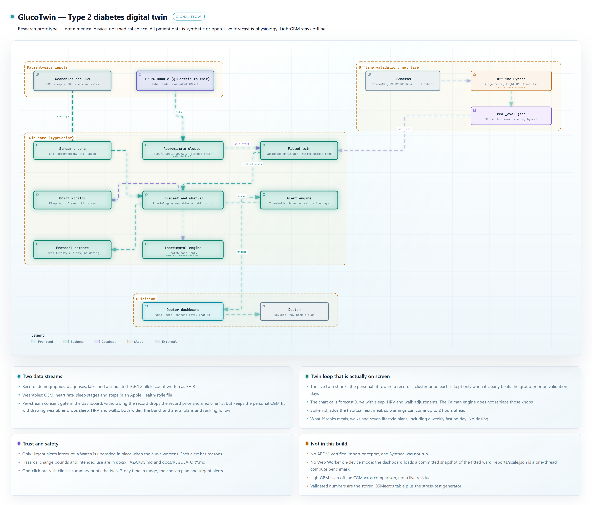
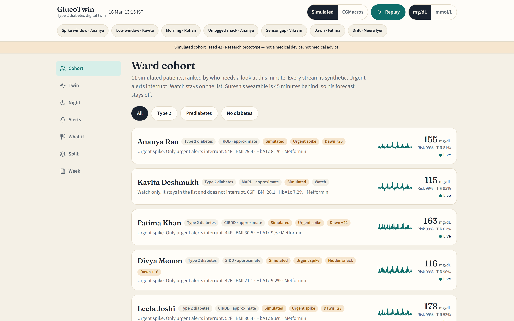
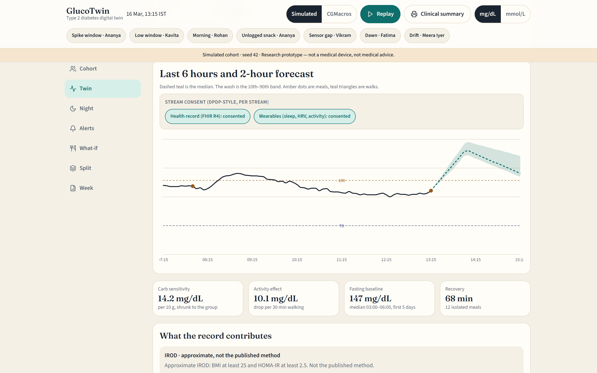
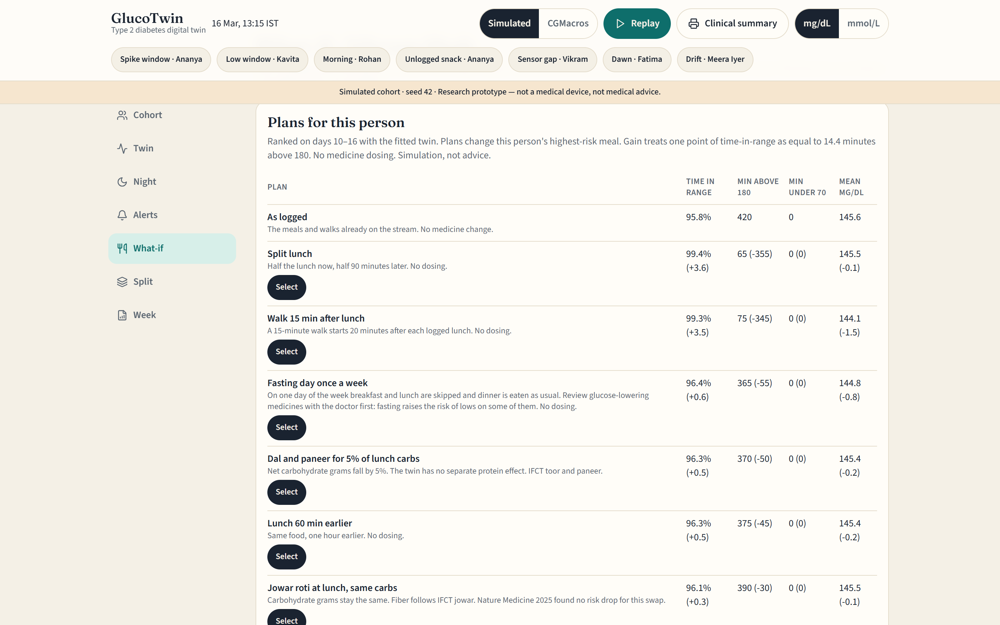

A digital twin for type 2 diabetes · Happiest Health Digital Twin Challenge 2026
GlucoTwin
18.3%
lower 2-hour error than persistence on 45 real adults (31.8 vs 38.9 mg/dL)
105 min
median warning before a glucose spike, using the habitual next meal
109 of 254
spikes warned 60+ min ahead; 33 a full 120 min ahead
7
lifestyle plans ranked on the patient's own twin, never a dose
Fuses the FHIR health record with CGM, sleep, HRV and activity to forecast glucose 2 hours ahead, warn before spikes with reasons, and test lifestyle plans on the patient's own twin.
Team Plague_Doctors · Nikhil Chawla, AI Engineer · BCA – AI & Data Science, RIMT University.
Research prototype — not a medical device, not medical advice. All patient data is synthetic or open (CGMacros, CC BY-NC-SA 4.0).
Research prototype — not a medical device, not medical advice.1 / 15
Cited surveys, then measured results
The gap, and what the twin changes
101 million adults with diabetes and 136 million with prediabetes in India. ICMR-INDIAB-17, Lancet Diabetes & Endocrinology, 2023. doi:10.1016/S2213-8587(23)00119-5.
Only 36.3% reach the glycaemic target; 7.7% reach HbA1c, blood pressure and LDL together. ICMR-INDIAB-13, Lancet Diabetes & Endocrinology, 2022.
Carbohydrates are 62.3% of energy in Indian diets. Nature Medicine, 2025. doi:10.1038/s41591-025-03949-4.
A clinic visit sees the 3-month average, not the spike that already happened.
GlucoTwin: 18.3% lower 2-hour error on real data (31.8 vs 38.9 mg/dL); spikes warned a median 105 min ahead, 109 of 254 at least an hour ahead; seven lifestyle plans compared per patient.
Research prototype — not a medical device, not medical advice.2 / 15
And what it refuses
What the twin does
Forecasts glucose 30, 60 and 120 minutes ahead with a 10–90% conformal band, from logged meals, walks, last night's sleep and HRV, and the record-based fit.
Anticipates the next meal: spike risk adds the person's habitual meal (median time and size from the fitting days), so warnings come a median 105 min early and 33 spikes were warned a full 120 min ahead.
Raises Urgent or Watch alerts and lists the meals, walks and sleep behind each one; only Urgent interrupts.
Ranks seven lifestyle plans on the patient's highest-risk meal: walk after the meal, a dal-and-paneer carb cut, an earlier meal, a split meal, jowar roti, and a weekly fasting day. Labelled Simulation, not advice.
Per-stream consent (DPDP-style) and a one-click pre-visit clinical summary for the chart.
Never doses a medicine and never diagnoses.
Research prototype — not a medical device, not medical advice.3 / 15
Fusion measured by removing one stream at a time (60-min RMSE, mg/dL)
Two streams, one fit
3.49
mg/dL lost without meals (22.91 → 26.40)
1.66
mg/dL lost without the record and the personal CGM fit (→ 24.57)
3.7%
lower error within 6 h of a walk with activity (15.83 vs 16.44)
1.2%
lower error after meals following a short or stressed night with sleep + HRV (21.59 vs 21.86)
Health record (FHIR R4, glucotwin-ts-fhir): labs, BMI, age, sex and medicines set the prior the live twin shrinks toward, blended with the group prior by inverse error variance.
Record prior and medicine term on their own: 22.91 with them, 22.81 without, no gain on this ward. The personal CGM fit carries the benefit.
Wearables: last night's sleep, sleep efficiency and HRV (plus half of the night before) scale insulin sensitivity and the dawn rise; walks raise sensitivity for 12–30 h.
Whole ward, all 6,306 forecasts: full 22.91, no activity 22.97, no sleep or HRV 22.89. Sleep matters where it acts, not on an average day.
On real CGMacros data the record alone cuts 1-hour error by 11.8% (30.4 → 26.8).
Research prototype — not a medical device, not medical advice.4 / 15
Same picture as docs/architecture
Architecture, as built

Live path: stream checks → fitted twin → forecast and what-if → alert engine → doctor dashboard with consent gate. Offline: CGMacros, ridge prior, LightGBM, trend fit.
Research prototype — not a medical device, not medical advice.5 / 15
What is live, what is offline
Models
Live: meal absorption with fiber and fat and a meal clock, walks, dawn rise, sleep and HRV sensitivity, residual decay, and a finite-sample conformal 10th–90th band. Validation days switched the meal clock off for CGMacros (60-min 30.8 with, 28.0 without).
Personal knobs come from days 1–5. How far each patient moves from the record prior is chosen on validation days 6–9; the personal fit is kept only when it beats the prior by more than one standard error.
Every patient's personal gain over the group prior is now ≥ 0 (range 0.0 to 3.7 mg/dL).
Alert thresholds are chosen on validation days, never on scored days. A Watch alert is upgraded to Urgent in place when the curve gets worse. On CGMacros a guarded CGM trend rule for lows (at or under 85 mg/dL, or 92 with no recent meal; fall ≥ 1 mg/dL/min; damped 15-min projection averaged with the twin's 30-min trough under 70) is chosen leave-one-participant-out; its candidate grid was first proposed after a look at test-day false alarms. The simulated sulfonylurea low guard is chosen on an independent realization of the ward, never on the scored days.
Subgroup labels (SIDD / IROD / CIRDD / MARD) are an approximate rule, not the published INSPIRED clustering. LightGBM stays offline.
Research prototype — not a medical device, not medical advice.6 / 15
Printed from the eval JSON
Outcomes on real and simulated data
18.3%
2-hour error vs persistence on CGMacros (31.8 vs 38.9)
9.3%
1-hour error vs persistence (26.2 vs 28.9)
99.8%
of 30-min forecasts in Clarke zones A + B
7 of 17
real lows warned on CGMacros, 38.9% precise
CGMacros, 45 adults: 30 min 18.5 vs 19.6 (a narrow win), 60 min 26.2 vs 28.9, 120 min 31.8 vs 38.9 mg/dL. The 10–90% band covers 0.81 / 0.79 / 0.79.
CGMacros alerts: spikes 38.9% caught at 63.8% precision; lows 7 of 17 at 38.9% precision, 0.43 false alerts per patient-day.
Simulated stress test (generator differs from the twin): 60 min 22.9 vs persistence 31.2; 120 min 28.1 vs 37.4.
Stress-test spikes: 61.0% caught, 66.9% precise, 0.75 false alerts per patient-day, median lead 105 min. Urgent alerts reach 67.6% of 185 severe events, 83.5% precise. Lows 6 of 16.
Matched generator (shares the twin's equations, an upper bound): 60 min 15.5 vs 26.5.
Risk ranking (AUROC, 95% CI): spikes 0.685 (0.638–0.730) on CGMacros, 0.947 simulated; lows 0.668 and 0.853. On real data the risk is a ranking, not a calibrated probability.
Research prototype — not a medical device, not medical advice.7 / 15
Same 254 spikes, same alert rules, same scorer
As accurate as the best simple alarm, earlier and quieter
0.638
F1 for GlucoTwin; next best 0.637 (Trend projection, 60 min)
105 min
median warning; CGM trend alarms 45 min at best
109
spikes warned ≥ 60 min ahead (42.9%)
0.75
false alerts per patient-day
GlucoTwin: 61.0% recall, 66.9% precision. F1 is level with Trend projection, 60 min; GlucoTwin warns a median 105 min ahead against 25, with 0.75 against 2.11 false alerts per patient-day.
Rise-rate alarm: 24.8% recall, 78.8% precision, F1 0.377, 0.13 false/day, median lead 5 min.
Trend projection, 60 min: 89.4% recall, 49.5% precision, F1 0.637, 2.11 false/day, median lead 25 min.
Trend projection, 120 min: 81.5% recall, 34.5% precision, F1 0.485, 3.86 false/day, median lead 45 min.
Big-meal rule, ≥ 40 g carbs: 56.7% recall, 58.5% precision, F1 0.576, 0.77 false/day, median lead 30 min.
Big-meal rule, ≥ 60 g carbs: 29.5% recall, 73.5% precision, F1 0.421, 0.20 false/day, median lead 25 min.
Source: docs/ALERT_PROOF.md (npm run alert-proof).
Research prototype — not a medical device, not medical advice.8 / 15
Time in range on days 10–16 of each fitted twin. No dosing.
Fatima Khan: Fasting day once a week — 62.1% → 64.8% (+2.7 pts), minutes above 180 3825 → 3550.
Suresh Patel: Fasting day once a week — 77.4% → 79.9% (+2.5 pts), minutes above 180 2280 → 2030.
Ananya Rao: Fasting day once a week — 79% → 81.3% (+2.3 pts), minutes above 180 2115 → 1890.
Imran Qureshi: Walk 15 min after lunch — 98.3% → 100% (+1.7 pts), minutes above 180 170 → 0.
The same plan, split lunch: Vikram +3.6, Kavita +2.9, Divya +2.8, Imran +1.7, Ananya -2.5, Suresh -2.9, Fatima -4.1, Leela -5.4 points. One rule does not fit every twin.
Plans target each patient's highest-risk meal (breakfast, lunch or dinner). Full table in the README.
Research prototype — not a medical device, not medical advice.9 / 15
Live screens from the running app
The doctor dashboard

Cohort triage: patients ranked by urgency; only Urgent interrupts

Twin: 2-hour forecast with conformal band and per-stream consent toggles

What-if: seven plans on the patient's own twin, with deltas
The Clinical summary button prints a one-page pre-visit sheet: twin parameters, 7-day time in range, the chosen plan and recent Urgent alerts.
Research prototype — not a medical device, not medical advice.10 / 15
Direction, not a reproduction
Built for India
IFCT 2017 food rows for Indian plates: rice, chapati, toor dal, paneer, jowar roti.
The diet paper is cited as direction. The twin sees carbohydrate grams, fiber, fat and walks; it has no separate protein effect.
Subgroup priors follow the South Asian SIDD / IROD / CIRDD / MARD labels with approximate thresholds.
A weekly fasting-day preset is built, with a medicine-review warning. Navratri, Ramadan and Ekadashi calendars are not.
CGMacros is a US cohort; transfer to Indian patients is not yet shown.
Research prototype — not a medical device, not medical advice.11 / 15
DPDP-style per-stream consent is live in the dashboard
Trust, safety and consent
Withdraw the health record and the twin drops the record prior and medicine list, keeps its personal CGM fit, and widens its band at least ×1.12; withdraw wearables and sleep, HRV and walks drop out and the band widens ×1.1. Alerts, plans and the ward ranking follow the consented twin.
Only Urgent alerts interrupt. Every alert lists its reasons; the doctor can mark a false alarm.
Drift is flagged as out of sync and never silently rewrites the fit on screen.
Intended use and change bounds: docs/REGULATORY.md. Hazards and the test that locks each one: docs/HAZARDS.md.
No insulin, no tablet dose, no diagnosis. The fasting-day plan tells the doctor to review glucose-lowering medicines first.
Research prototype — not a medical device, not medical advice.12 / 15
per reading: update, 2-hour forecast and spike risk
61,437
readings per second on one laptop thread
14 µs
median dashboard forecast
229 ms
to load the fitted ward in the dashboard (a cold fit and evaluation take 12.0 s)
Compute only: excludes network and database time. One thread; the work is independent per patient, so it shards by patient. Benchmark: 3,000 simulated patients × 288 readings.
The record is a FHIR R4 Bundle, the format ABDM exchanges. ABDM-certified import and an on-device Web Worker are not built yet.
Per-stream consent is already enforced in the dashboard, ready to map onto an ABDM consent artefact.
Research prototype — not a medical device, not medical advice.13 / 15
Read these before the headline
Limitations
The simulated ward is synthetic (seed 42); its sleep, HRV, walk and medication effects are modelling assumptions at the upper end of published studies.
Sleep and HRV help after meals following a hard night (21.59 vs 21.86) but not on an average day (22.91 vs 22.89).
CGMacros is 45 US adults. At 30 min the twin is 18.5 against persistence 19.6 (a narrow win), and low alerts are 38.9% precise, short of the 45% target.
Simulated lows: 6 of 16 warned at 100.0% precision, short of a 65% target; the sulfonylurea guard is chosen on an independent realization, so this is blind. The record prior and medicine term do not lower pooled simulated error, but without them warned lows fall to 3 of 16.
Approximate subgroups, offline LightGBM, plan compare is a simulation. Not clinically validated.
Research prototype — not a medical device, not medical advice.14 / 15
Next: a supervised clinic pilot
Roadmap and team
Now: the twin runs on 11 simulated patients and 45 real CGMacros adults, with consent, alerts, plans and the pre-visit summary.
Next: ABHA-consented FHIR import through ABDM, learned medicine effects for lows, and calibrated risk on real Indian CGM data.
Pilot: one diabetes clinic, 30 consenting adults on CGM for 12 weeks, with a doctor reviewing forecasts and alerts.
Team Plague_Doctors. Nikhil Chawla, team leader — AI Engineer, BCA – AI & Data Science, RIMT University, Mandi Gobindgarh, Punjab. Faculty mentor: Dr. Rajkumar (Head of Department, Computer Applications, RIMT University).
GitHub: github.com/1nikhilchawla.
Research prototype — not a medical device, not medical advice.15 / 15